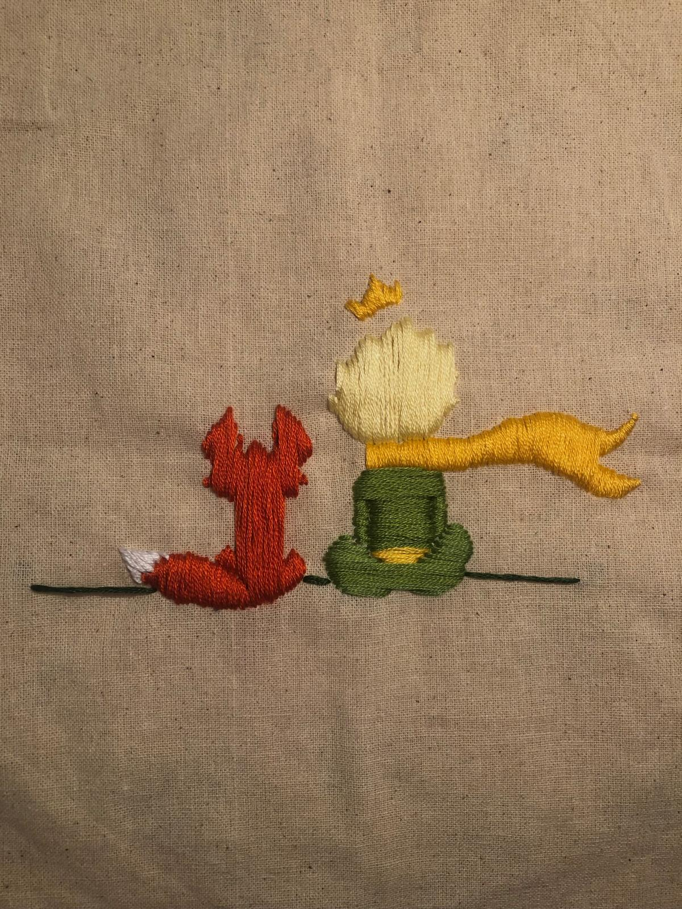

Caminante
Un ricamo fatto a mano, curato nei dettagli e nei colori.
Fatti a mano, con amore
Piccoli dettagli, colori e storie cuciti punto dopo punto. Sfoglia i ricami e gira le schede per scoprire altri dettagli.
Progetto 1 di 3
Un ricamo fatto a mano, curato nei dettagli e nei colori.

Un soggetto ricamato a mano con attenzione a ogni piccolo dettaglio.

Un motivo ispirato alla natura, realizzato punto dopo punto.
Puoi scorrere con le frecce o con un gesto laterale ♡